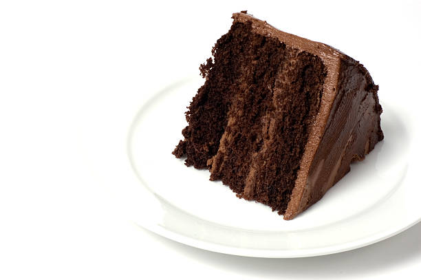

High-Altitude Buttermilk Devil's Food Cake

Best chocolate cake in the world!
This recipe was given to me by my great-aunt Julee over 40 years ago and I have had to convert it from SE Oklahoma Mountain area altitude to our altitude. We live in NM between 5000 feet and 7000 feet and I bake this 3-layer cake often for my family. If making a sheet cake, I use an 11 x 15 pan for this recipe.
Ingredients
- cooking spray
- 2 ¾ cups cake flour (such as Pillsbury® Softasilk®)
- 1 cup unsweetened cocoa powder
- 1 ½ teaspoons baking soda
- ½ teaspoon salt
- 1 ¾ cups white sugar
- 1 cup butter, softened to room temperature
- 2 teaspoons vanilla extract
- 1 teaspoon almond extract
- 2 ¼ cups buttermilk, divided
- 2 eggs
Directions
- Preheat oven to 375 degrees F (190 degrees C). Coat three 9-inch round cake pans generously with cooking spray.
- Mix cake flour, cocoa powder, baking soda, and salt together in a large bowl.
- Beat white sugar, 1 cup butter, 2 teaspoons vanilla extract, and 1 teaspoon almond extract together in a large bowl with an electric mixer on medium speed until light and fluffy. Pour in half of the buttermilk and mix well. Beat in eggs one at a time.
- Beat half of the flour mixture into the creamed butter mixture. Add remaining buttermilk; beat well to combine. Add remaining flour mixture and beat until batter is smooth, about 1 minute. Pour batter into prepared cake pans.
- Bake in the preheated oven until a toothpick inserted into the centers comes out clean, 26 to 30 minutes. Let cool in pans, about 15 minutes. Invert onto wire racks and cool completely before frosting, about 45 minutes.
- Beat 1 1/4 cups butter, 2 teaspoons vanilla extract, and 1 teaspoon almond extract in a large bowl with an electric mixer on medium speed until creamy. Beat in milk gradually. Add confectioners' sugar, 2 cups at a time, scraping sides of the bowl as needed, until frosting is smooth. Increase speed to high and beat, adding more milk, 1 tablespoon at a time, until frosting is fluffy and spreadable.
- Spread frosting between cake layers and smooth over top and sides of cake.